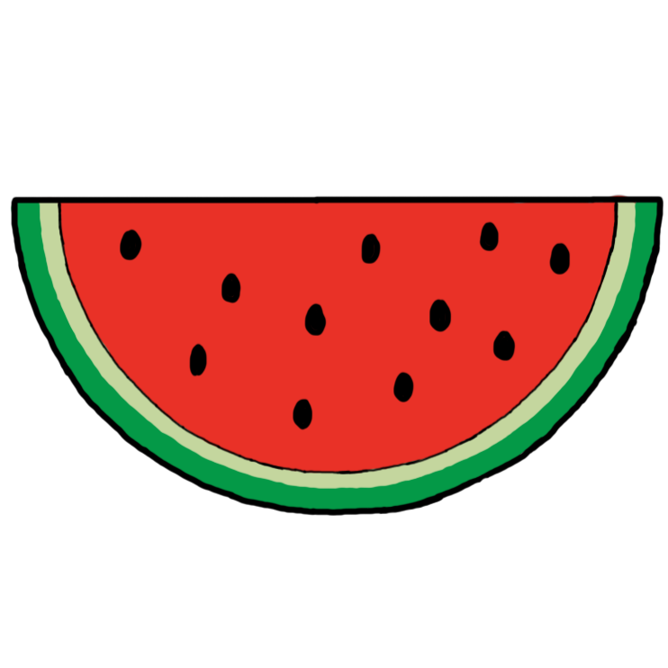

Público
Nosso jogo busca atingir jogadores de todas as idades que têm interesse em jogos educativos e conscientes.

Global Solutions do grupo PG² em conjunto com a Kraft Heinz Company para aumentar a conscientização sobre o desperdício de alimentos e o combate à fome no mundo.
Durante uma palestra sobre desperdício de alimentos e fome em países desfavorecidos, um menino é despertado para a realidade cruel dessas questões globais. Profundamente sensibilizado com a quantidade de pessoas que sofrem com a falta de algo tão básico como comida, ele decide se juntar a uma ONG local que está lutando contra esse problema.
Ele se oferece como voluntário e participa de missões desafiadoras para resgatar alimentos antes que sejam desperdiçados, conscientizando a população sobre o problema. Ao longo da narrativa, o protagonista aprende valiosas lições sobre sustentabilidade, enquanto descobre o poder que cada indivíduo possui para promover mudanças positivas. Nutri Dash é uma história de esperança e ação, incentivando os jogadores a adotarem escolhas mais conscientes para um mundo melhor.
Com esse game temos como objetivo conscientizar o jogador sobre desperdício ao mesmo tempo que ele pode se divertir, batendo seu próprio record ou o de seus amigos!
Para acumular uma boa pontuação, é necessário que o player colete o máximo de alimentos possível e desvie de obstáculos.
Nosso jogo busca atingir jogadores de todas as idades que têm interesse em jogos educativos e conscientes.
Nesse jogo, o personagem deverá coletar alimentos saudáveis que caem do céu enquanto desvia de obstáculos. Com a cesta cheia, ele deverá levá-la ao ponto de entrega, que será representada pela ONG que o personagem principal se junta. O jogador terá 3 vidas, que poderão ser perdidas caso o mesmo deixe de pegar algum alimento e ele cair no chão.
O jogo será para computador.
Movimentação: A (esquerda), D (direita). Pulo: Espaço. Dash: Botão esquerdo do mouse Demonstração da gameplayNutri Dash é um jogo desenvolvido como desafio proposto pela Kraft Heinz Company para conscientizar sobre o desperdício de alimentos. O jogo incentiva os jogadores a coletarem alimentos prestes a serem desperdiçados e entregá-los a uma ONG, transmitindo a importância de evitar o desperdício e destacando ações individuais que contribuem para combater a fome e o desperdício de alimentos.
